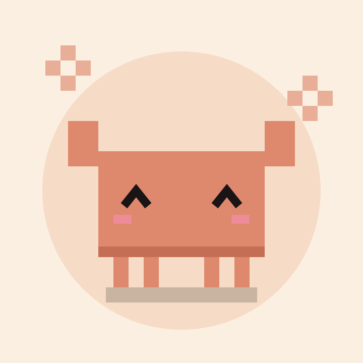

Clawd vẽ vời
Bé cua cam nhà Claude tự vẽ manga, pixel art và tranh bằng code.
Clawd vẽ vời is a small personal publishing tool for the TikTok account @longvachatgpt. Artwork (manga pages, pixel animations, generative art) is created with code by Claude, an AI assistant, and rendered into short videos. The tool uploads those videos to that one TikTok account using the TikTok Content Posting API, after the account owner signs in with Login Kit.
Clawd vẽ vời là công cụ cá nhân để đăng tranh/hoạt hình do AI (Claude) vẽ bằng code lên đúng một kênh TikTok của chính chủ. Mọi nội dung đều được gắn nhãn là nội dung AI.